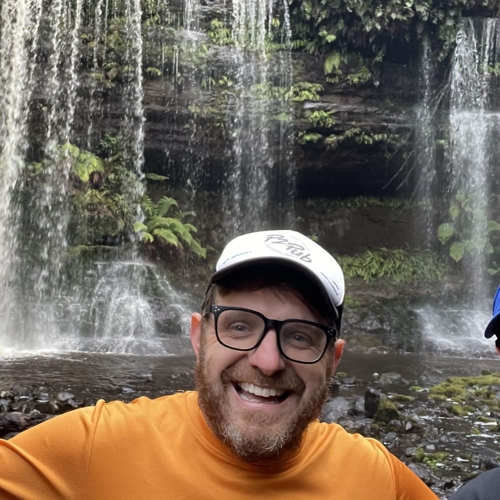
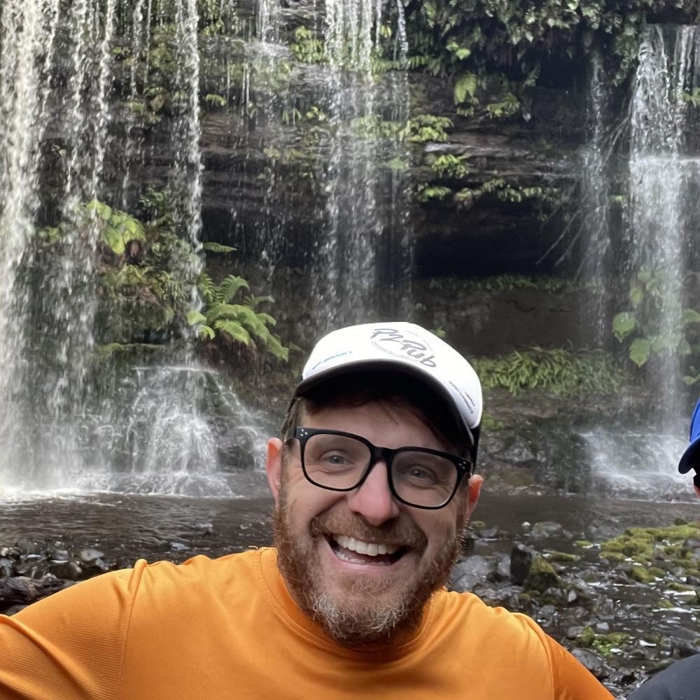

Dr. Nick Fountain-Jones
Dr. Nick Fountain-Jones is a lecturer in public health with a focus on evolutionary disease ecology and One Health. He integrates methods in epidemiology, ecology, and genomics to understand how pathogens emerge and evolve, and how these processes affect wildlife, livestock, and human health.
Nick’s research spans a variety of species and ecosystems, often with a goal of informing evidence-based conservation and health management strategies. Through cross-disciplinary collaborations, he has contributed to a deeper understanding of disease transmission and evolution in a changing world.
Current Roles & Interests
- Evolutionary One Health research
- Pathogen genomics and phylogenetics
- Epidemiological modeling
- Wildlife-livestock-human interface
Learn More
For more details on Dr. Fountain-Jones’ background, current grants, and teaching activities, visit the University of Tasmania profile .